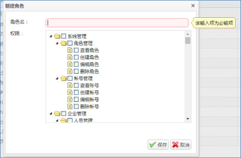

一、 重要说明：
后台使用中多次出现“选择对象”，包括发现管理-板块管理，课件分类，考试对象，调研对象，服务号发送对象等，使用方法一致，总结如下：
点击“访问对象”，可看到三种选择方式，“按姓名选择”、“按职务选择”、“按部门选择”。除此之外的人员是否需要参加，默认“禁止”。
l 按姓名选择：具体到人，如果允许新用户访问，必须重新修改
l 按职务选择：根据职务筛选，如果该职务新增用户了，则默认这些用户也可访问，不需重新修改
l 按部门选择：根据部门筛选，如果该部门新增用户了，则默认这些用户也可直接访问，不需要重新修改。
“以上人员是否允许参加”默认允许。
二、 系统管理
1. 首页-修改密码
1.1功能：修改密码
1.2操作：进入系统管理首页后，点击管理员登录信息中的“修改密码”，输入正在使用中的密码，以及两遍新密码，即可完成修改。
注意：版本更新信息处会提示后台更新的功能，请注意查看。
2. 角色管理
2.1 功能：创建新角色（可选择不同的权限），注意：角色可以添加多个权限，且管理员只能分配角色，所以必须提前创建好角色，系统默认12个角色可编辑，增加删除都可以。
2.2 操作：点击“新建”按钮，给角色命名，然后选择权限，可以选择多个。

3. 账号管理
1.1功能：创建管理员账号，可为管理员分配多个不同的角色。
注意，管理员只能添加角色，不能直接选择权限。
1.2操作：
（1）按要求输入名称、邮箱、密码，并选择角色（角色是之前创建好的），可以多选。
注：管理员按照初始密码登录，初次登录系统强制修改密码，按提示修改即可。
注：可为管理员“开启部门权限”，按部门管理的组织架构展开，可多选。即可实现某个管理员只管理某部分用户的功能。
（2）选择账号，点击编辑、禁用、删除按钮即可实现功能。
三、 企业管理
1、人员管理
1.1功能：APP用户的新建以及编辑、禁用、设为专家、删除、在线信息查看（即查询验证码），逐个或批量导入人员，逐个或批量删除人员；审核，准许用户登录（注意有的APP没启用审核功能）；按搜索条件导出。
1.2操作：新增两种方式，一是“新建”即逐个加入；二是“导入员工信息”，即批量导入，然后按提示录入正确的人员信息（并上传）即可。删除两种方式，以上逐个删除，一个是全选。
注：工号唯一，工号不变，这个人所有活动信息都在，一旦删除，之前所有记录都消失。
注：单个人员增加及批量人员修改、增加建议都使用“导入用户”功能。
（1）编辑：直接弹出该用户信息，可用于修改手机号。
（2）禁用：禁用用户后，用户无法使用app，历史记录仍保留，再次启用后，用户可继续使用app。
（3）设为专家：该用户设为专家后，可以在APP场景页面体现（注有的APP尚未开通场景页面）
（4）删除：删除用户后，用户无法使用app，历史记录不保留，如需再次使用app，需在人员管理中重新导入此人。
（5）在线信息：紧急情况下，用户收不到验证码，可以来这查看。
2、部门管理
2.1功能：添加同级部门、添加子级部门、编辑及删除
2.2操作：部门管理最多可设置6级。点击“添加同级部门”、“添加子级部门”“删除”即可，切记点击‘三角号’选择正确的组织架构；更改部门名称需选中部门，点击“编辑”即可修改。
注意：如果excel导入，导致新增的部门，修改之后一定到“部门管理”里删除！
3、职务管理
3.1功能：新建、编辑与“删除”
3.2操作：点击“新建”、“编辑”“删除”即可
4、职级管理
4.1功能：新建、编辑与删除
4.2操作：点击“新建”、“编辑”、“删除”即可
注：excel模板导入用户时，如有新部门、新职务、新职级，后台会自动添加，故添加部门、添加职务、添加职级的操作不必进行。
四、 发现管理
1、板块管理（即发现分类管理）
1.1功能：设置发现不同板块，板块分级及排序。
1.2操作：
（1）创建板块（即APP发现模块）：
点击 “创建板块”→输入板块名称、上传板块图标→选择板块类型→选中访问对象→选择是否提示更新→保存。点击启用才会在手机APP上显示。
注：各板块的顺序可调整，这里的操作直接关于APP的界面，操作时务必要谨慎！
注： “板块类型”，考试中心、调研中心、问答中心直接对应后台相应板块，链接类属于特殊类型，默认选“课程库”，即可以“创建课件分类”。
注：访问对象使用，查看“一.重要说明”，不选择访问对象，默认所有人均可访问。
（1）创建课件分类（即每个板块下的课件分类）：
点击一级板块前的加号→点击“创建课件分类”→输入分类名称→选中访问对象→保存。
注：课件分类中的选择的访问对象如不在该板块选择的访问对象中，依然无法查看课件。访问对象使用，查看“一.重要说明”。
注：
1. 开通板块后，必须设置一个课件分类客户端才会显示父板块
2. 注意设置好之后板块和课件分类都要点击“启用”！
3. 这里的“查看课件”可以查看已有课件，也可以添加新的课件。
2、轮播管理
2.1功能：添加、编辑、禁用、删除轮播图
2.2操作：输入标题→上传图片→选择轮播内容→选择人群（访问对象使用，查看“一.重要说明”）→保存
（1）“选择轮播内容”的含义：
“无”的含义：点击此张轮播图无反应。
“链接”的含义：点击此张轮播图跳转到指定链接。
“发现课件”的含义：点击此张轮播图跳转到对应的发现课件。
“考试中心”的含义：点击此张轮播图跳转到考试列表页。
“调研中心”的含义：点击此张轮播图跳转到考试列表页。
“问答中心”的含义：点击此张轮播图跳转到问答专区列表页。
（2）禁用与删除的区别：禁用后轮播图仍保留，可再次启用；删除后轮播图不保留。
3、课件管理（所有课件库）
3.1功能：新建、编辑、禁用、删除课件与查看详情，导出课件列表
3.2“新建”操作：上传课件封面图片→输入标题→设置所属分类→选择课件类型→上传课件内容→课件设置→选择人群（访问对象使用，查看“一.重要说明”）→保存

（1）设置所属分类（即该课件在哪个分类下）：勾选选择正确的分类；这里一个课件可设置多个所属分类，在分类前勾选即可。
（2）“课件类型”的含义：
“链接”的含义：用易企秀、微信公众号后台或其他平台制作课件，生成的链接都可以。
“PDF文档”的含义：上传pdf格式的课件。
“视频”的含义：上传视频格式的课件。
“音频”的含义：上传音频格式的课件。
注：课件录入时选择的人如不在板块、课件分类的人群中，无法查看课件。
注：允许内部分享，即在APP内部可以分享；允许外部分享，即允许分享到微信好友和朋友圈。
禁用与删除的区别：禁用后课件仍保留，可再次启用；删除后课件不保留。
导出课件列表，包括所有课件的基本内容和所有用户数据。
五、 社区管理
1、板块管理
1.1功能：设置社区不同板块，可以“创建同级板块”“创建子级板块”，以及板块分级、排序。而且可以为最底级板块进行“标签管理”。
1.2操作：
先选择一个板块，再点击“创建”按钮。访问对象使用，查看“一.重要说明”。
2、管理标签
2.1 功能：板块添加标签之后，用户在手机APP发帖时，可以贴标签，然后提醒相关感兴趣的人进入社区查看。
注意：社区板块添加标签之后，需要给用户贴上标签，才会实现提醒。如板块有标签“电影”，用户A贴有标签“电影”，然后其他任何用户发帖时，只要贴上标签“电影”，A都会收到提醒。
3、帖子管理
3.1功能：帖子推荐、置顶、迁移、删除、导出及查看详情。
3.2操作：点击相应按钮即可。
注：推荐与置顶的区别：推荐帖呈现在社区首页的顶部，置顶帖呈现在对应板块的顶部。
六、 服务号管理
1.1功能：新建服务号
1.2操作：上传头像→输入名称→功能描述→账号说明→选择对象（访问对象使用，查看“一.重要说明”）→保存
注意：这里选择对象，决定能收到这个服务号的用户。如果不在该服务号选择的对象中，此用户一定不会收到该服务号发出的消息。访问对象使用，查看“一.重要说明”。
（2）点击“发布”→选择人群（同板块管理中”选择对象”）→录入消息内容→选择立即发布或预约发布→发布。
注：发布消息，可以选择该服务号下面的全员，或部分人员，但创建服务号时没有选择的人群中，一定不能收到消息。
消息管理：可以发布消息，查看消息。
七、 考试管理
1、题库管理
1.1功能：创建、编辑、删除、题库；导入、编辑、删除、查看题目。
1.2操作：
（1）题库：选中一个题库，点击“创建同级题库”，输入名称后保存即可。如想分级建立题库，选中一个题库，点击“创建子级题库”。编辑或删除操作点击按钮即可。
（2）考题：点击题库名字进入题库，添加或导入、编辑、删除考题。
注：批量导入考题时需点击“模板下载”，按照模板要求录入。
2、试卷管理
2.1功能：发起考试；编辑、删除试卷；导出考试结果；发起补考。
2.2操作：
（1）新建考试：
输入名称→选择时间→确定及格分数→选择考试对象（同发现管理-板块管理-选择对象）→选择题库→选择考题→确定每题分数→试卷预览→发布
注：答案展示时间，控制客户端什么时候显示考试结果，可避免作弊。
注： 一旦发布，官方服务号会向指定用户推送消息提醒。
（2）补考 删除 试卷预览 查看结果
注意：试卷预览，只有“出题方式”选择“指定考题”的时候才有；“随机抽取考题”的时候不提供试卷预览。因为“随机抽取考题”，到每个用户APP上呈现的题目是不一样的。访问对象使用，查看“一.重要说明”。
（3）添加考题
手动选考题：选择题库，选择考题即可
自动生成考题：选择题库，根据单提分数，自动选择考题。因为满分必须100分，如单题分数选择5分，则自动选择20题。注意这时用户APP看到的试卷是一样的。

八、 调研管理
1、调研管理
1.1功能：发起调研；编辑，复制，删除，禁用、查看结果、导出调研结果
1.2操作：
（1）点击“新建”→填写调研基本信息→保存
注： “结果展示时间”控制的是用户在客户端完成调研时候能否看到填写结果。
注：访问对象使用，查看“一.重要说明”。
注： 一旦保存，官方服务号会向指定用户推送消息提醒。
（2）选中调研，进行对应操作即可，注意模板导入严格按照模板填写，不能改动
十、问答管理
1、分类管理
1.1功能：新建、编辑、删除分类；批量导入。
1.2操作：批量导入时需下载模板，按照模板要求录入。
2、问题管理
2.1功能：单个添加、删除、批量导入、批量导出、迁移问答。
2.2操作：点击相应按钮即可。
以上后台所有操作，超级管理员后台有记录，请各位管理员认真使用！